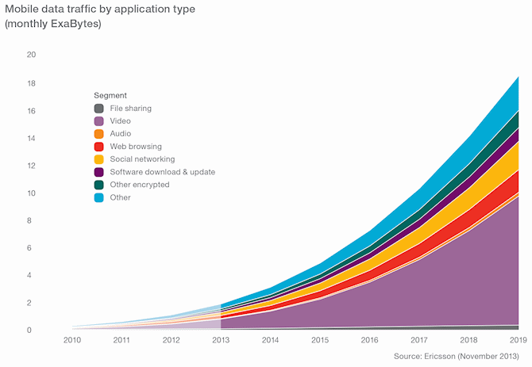

Hot topics like “big data”, “machine learning”, “data science” are now dominating in the scientific community. In the past 10 years alone, data availability has increased exponentially (and not even in a squared, or cubed sort of way… we are talking on the order of 1010 if not more). Exabytes (1018 or one QUINTILLION bytes!!?) of information are being passed, stored, saved and analyzed on a monthly (perhaps weekly?) basis. This includes credit card transactions (in November 2015, there were approximately 242 million credit card transactions in the United Kingdom alone; (source: BBA)), web searches (Just think about how many times you use Google in the run of a day, and interpolate that out to the 40% of the world who have access to the internet), and any time a user (you) clicks on a link you found on Facebook. When you combine this with the countless other data coming in, it is nearly overwhelming to think about. This led to the rise of “Big Data” and how “Data Scientist” become the “sexiest job of the 21st century” (source: HBR). If you’re interested in a brief history of data science and big data, check out THIS ARTICLE in Forbes magazine.
As data scientists, we love big data. Imagine, a nearly endless data source; complete time series which track a person’s spending behavior, or masses of imagery (photos and otherwise) at super fine resolution… even I sit here drooling about the thought of playing with such “clean” and complex data… It offers up the opportunity to explore and analyze systems in ways we had never previously thought possible, and has now opened the doors for talented problem solvers to come along and deal with the complex issues surrounding these big data sets. But where does that leave the Ecologist? Those tasked with understanding how animals interact with the environment, yet are working with datasets that are literally 5 - 10 orders of magnitude smaller than some of the datasets that industry level data scientists explore (e.g., breeding bird surveys with 20 year time series… in other words, n=20, for particular sites Breeding bird survey of North America)… For a list of ecological data sets, check out Ecologicaldata.org.
Data in Ecology are often times small, patchy (i.e. missing years or having spatial gaps), and statistically distributed in ways that make them incredibly challenging to handle. As in traditional studies, Ecologists who are used to such data, have analyzed and interpreted that information using statistical techniques appropriate for small datasets (linear regression or LOGIT-type functions, chi-squared tests, etc…). This is changing however as more and more data become available with Ecological data just beginning to edge into the world of big data (thanks to satellites, GPS tracking technologies, and the like). Now, we are at a point where we can gather information on the entire distribution of a species (See for example, the MAPPPD PROJECT, or GBIF ). This is leading up to a disconnect between advanced statistical techniques and current ecological thinking, which is perhaps harming the field of Ecology. In other words, datasets in Ecology are too big for traditionally trained Ecologists, and too small (or too gappy) for Big Data scientists.
I have pondered this problem a lot over the past many years, without having given a name to the problem. I have even gone on to blame University systems for not adequately training Ecologists and biologists in “big data” thinking. However, recent discussions with colleagues Heather Lynch, Christian Che-Castaldo, and students at the LYNCH LAB FOR QUANTITATIVE ECOLOGY have helped to focus my thinking on this. Dr. Lynch best described this disconnected area as “MESOSCALE DATA SCIENCE”. This would be the type of data science needed to be perform analysis on complex, gappy data typically found in Ecology. So, it is perhaps unfair to judge universities for not preparing Ecologists in “big data” thinking. Instead, the issue lies in an un-resolved and un-identified field of study.
What steps do we take from here? How do we move forward with “mesoscale” data science? I am personally of the belief that the answer lies in the machine learning community.
We have already seen advances in MESOSCALE DATA SCIENCE in Ecology, but are only now realizing it as a progressing field. For example, advances in SPECIES DISTRIBUTION MODELS have been driven by these issues I’ve just described. Supervised classification algorithms like RANDOM FORESTS, and GRADIENT BOOSTED MODELING have shown great success in predicting to very large (and very small) presence / absence (occupancy) datasets. They have also been used with variable success on TIME-SERIES DATA. RESEARCH has also shown that these tree based classifiers are amongst the best (even compared to neural nets which are heavily used by big data scientists). Combining what we know based on some of the advancement in mesoscale data science with lessons from big data (i.e. numerical optimization, better gradient descent methods, use of complex tensors), I believe we’re on the cusp of greatly advancing our knowledge of Ecological systems.
This relies greatly on two things…
So, I challenge some of the big data thinkers to approach us and discuss these issues. How can we use big data techniques to handle datasets that are only n = 50 – 2000? How can we dig deeper into our parameters and covariates in ways we haven’t thought of? Merging big data with traditional small data sets (like those in ecology) forms the core of Mesoscale data science.
Figure 1 source: Ericsson report
 Dr. Grant R.W. Humphries
Dr. Grant R.W. HumphriesI would love to meet you on Twitter! You can follow our blog there, and see all sorts of interesting posts that aren't just cats on a roomba!